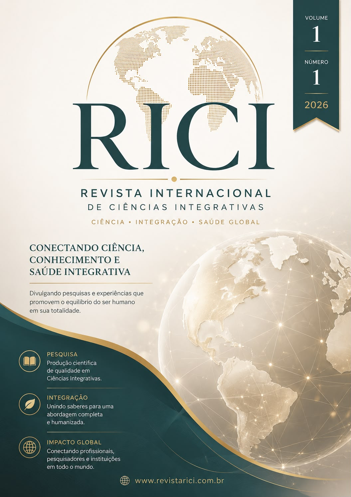

Volume 1, Número 1 (2026): Edição Especial de Junho

Esta edição de lançamento da RICI (Revista Internacional de Ciências Integrativas) reúne três estudos pioneiros voltados às fronteiras contemporâneas da medicina metabólica, regenerativa e da longevidade funcional, com foco em mecanismos biomoleculares, terapias peptídicas e estratégias farmacológicas de última geração.
Os artigos aqui reunidos oferecem ao leitor e profissional da saúde uma visão crítica e atualizada sobre compostos que vêm despertando crescente interesse na pesquisa clínica internacional. As discussões abrangem a modulação do envelhecimento humano por bioreguladores peptídicos como Epithalon, Vilon e Vesugen, os potenciais regenerativos do BPC-157 e do Thymosin Beta-4 na reabilitação osteomioarticular, além de uma análise detalhada sobre a eficácia clínica da tirzepatida e da retatrutida no manejo moderno da obesidade.
Nosso compromisso é consolidar um espaço científico de rigor analítico, promovendo a integração entre a pesquisa básica e a aplicabilidade clínica translacional, visando o equilíbrio integral da saúde humana.